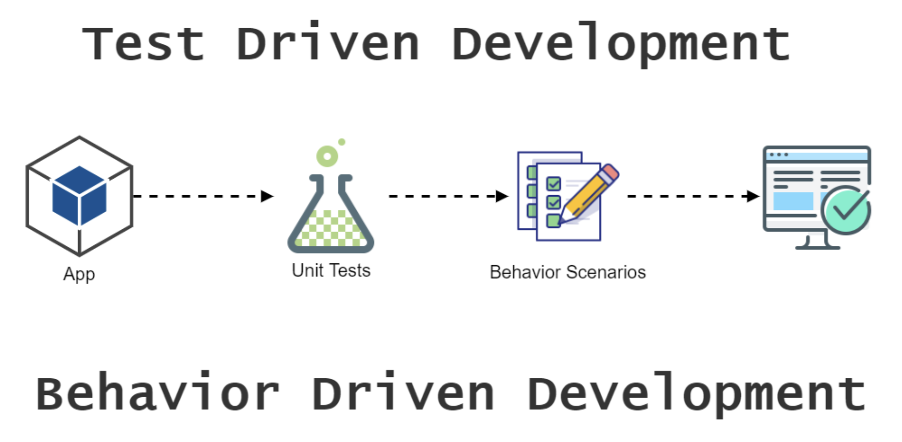

Unit tests
AGENDA
- Testing in software development
- Testing Pyramid
- Unit tests
- TDD & BDD
- Testing statistic
- Testing libraries
- Jest as a testing framework
- Husky
Testing role in Software Development
- Testing is about verifying that what was specified is what was delivered.
- The testing is important since it discovers defects/bugs before the delivery to the client, which guarantees the quality of the software.
Major benefits of software testing
- Launch a flawless software application
- Prevent targeted malware attacks
- Improves the user experience
- Curtail maintain costs
- Improve time-to-market
- Enhance quality of apllication
- Boost competitiveness
The scope of Testing
The test scope defines what areas, features, and functionalities of an application should be tested
Testing Pyramid

Benefits of unit tests
- Save development time
- Provide quick access to code documentation
- Contribute to code quality
- Improve application architecture
- Debug process
- Reduce costs in long run
Impacts of neglecting unit tests
- The risks of simple mistakes leaking to the end user significantly increase in the absence of unit tests.
- Skipping unit tests quickly turns fresh code into legacy code, which is harder to maintain.
TDD vs BDD
TDD is RED-GREEN-BLUE development

Testing statistic

Testing statistic

Writing testable code
To make your app more testable, start by separating the view part of your app from your business logic and app state.

Testing libraries
Jest
Mocha
Jasmine
Ava
Vitest

Why Jest?
- Facebook developed the Jest unit testing framework.
- The default template of React Native ships with Jest testing framework.
How to set up Jest?
After command 'react-native init' The following configuration should be automatically added to your package.json file:
{
"scripts": {
"test": "jest",
},
"jest": {
"preset": "react-native",
}
}
jest.config.js and jest.setup.js files
A list of paths to modules that run some code to configure or set up the testing environment. Each setupFile will be run once per test file.
module.exports = {
roots: ['/src'],
collectCoverage: true,
coverageThreshold: { ... },
preset: 'react-native',
setupFiles: ['jest.setup.js'],
setupFilesAfterEnv: ['/src/globalMock.js'],
};
Structuring Tests
beforeAll(() => {
// ...
});
afterAll(() => {
// ...
});
describe('Our component', () => {
beforeEach(() => {
// ...
});
it('should test this', () => {
// ...
});
});
Expect
expect(value)
expect.anything()
expect.any(constructor)
.not
.toBe(value)
.toHaveBeenCalled()
.toBeLessThan(number | bigint)
.toBeNull()
.toContain(item)
.toEqual(value)
.toMatch(regexp | string)
.toMatchSnapshot(propertyMatchers?, hint?)
.toThrow(error?)
Mocking & The Jest Object
// Mock functions
jest.mock(moduleName, factory)
jest.unmock(moduleName)
jest.requireActual(moduleName)
jest.resetModules()
jest.isolateModules(fn)
// Mock modules
jest.fn(implementation?)
jest.spyOn(object, methodName)
jest.clearAllMocks()
jest.resetAllMocks()
jest.restoreAllMocks()
Snapshots
it('should match snapshot', () => {
const {toJSON} = render(Test coverage
With that being said it is generally accepted that 80% coverage is a good goal to aim for.
Trying to reach a higher coverage might turn out to be costly, while not necessary producing enough benefit.


When tests fail

Husky
"husky": {
"hooks": {
"pre-commit": "YOUR_COMMAND",
"pre-push": "YOUR_COMMAND"
}
}